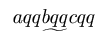

Pakiet udostêpnia polecenie
utilde umo¿liwiaj±ce wstawienie ,,wê¿yka'' pod znakiem
(dzia³a tak jak akcent), mo¿na go u¿ywaæ tylko w trybie matematycznym.
D³ugo¶æ wê¿yka mo¿e siê zmieniaæ w pewnych granicach (do ok. 3 znaków).
Przyk³ad:
$$\utilde{aqqbqqcqq}$$

Pakiet jest dostêpny pod adresem:
ftp://ftp.gust.org.pl/TeX/macros/latex/contrib/undertilde
 W³odzimierz Macewicz
W³odzimierz Macewicz